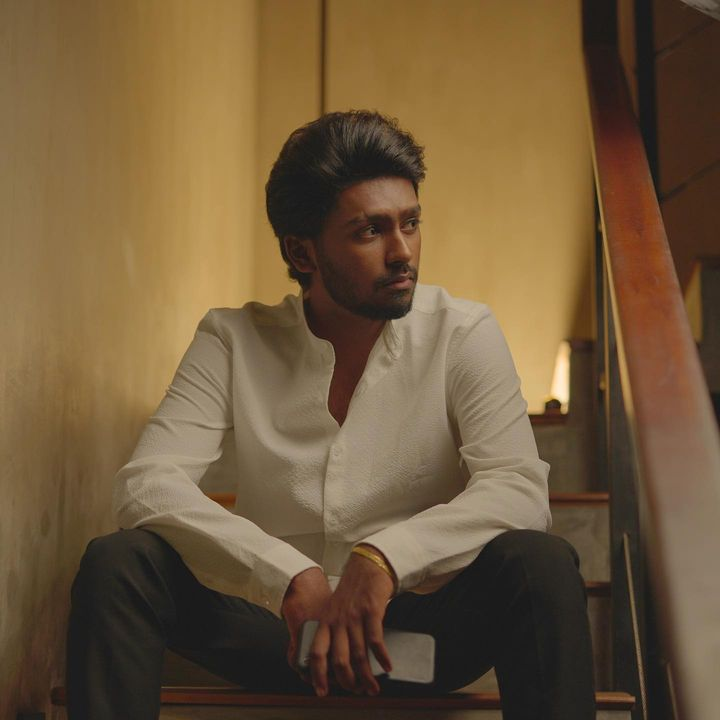
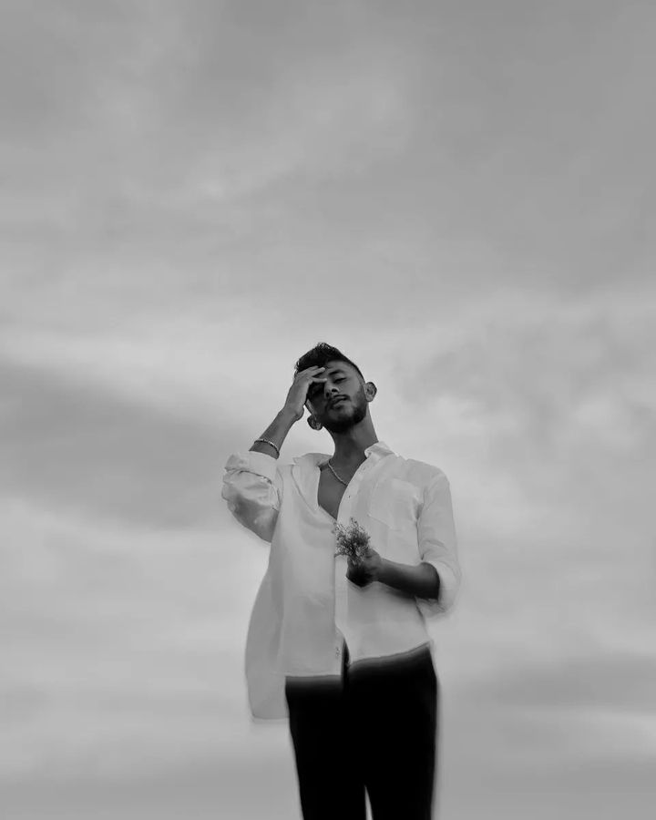

Rising Stars
DILU Beats

Dileepa (Born:October 12,2001 in Matara,Sri Lanka) Known professionally as DILU Beats
is a producer,Music composer,Arranger & Singer.
He works with HipHop,Pop,RnB,Trap,EDM,Classical Music,Modern Music,World music & Many other genres.
He currently works as a Music producer at Magampura Records.
Mihiran

Lakshitha MIhiran,also known as Mihiran,excels as an all-round musician who has mastered Pop,HipHop,Trap & Lofi.
Also he is a Sri Lankan Rapper,Composer & Songwriter.
One of his releases,"Mulawe"is an all-time hit on social media platforms & reached over 15 million views
on YouTube so far & streamed over 4 million times on Spotify and 500K times on Apple Music.
And he has been staying on "Top 100:Sri Lanka,Apple Music"and made it into popular playlists on Spotify.
In addition,he has done the melody composing work for several songs that became quite famous in Sri Lanka.
A successful music career & many new songs will await for him in the future.
Ramidu

Ramidu Yashmintha (born 31 August 1999),commonly known as Ramidu,is a Sri Lankan Musician,Singer & Music Composer.
His works are noted for integrating Pop & RnB.Ramidu's made more hits in the Sri Lankan with came of Nohimi song in music industry.
Yuki Navarathne

Pannala Gedara Yukthi Prabudika Navaratne aka Yuki Navaratne was born 12 May 1990,known professionally as YukiBeatz,is a Sri Lankan music director,singer,arranger & well-known music producer.
His works are noted for integrating HipHop/RnB/Trap with electronic music,world music & modern musical arrangements.With an in-house studio (YukiBeatz)Yuki's career started rising in 2015 witg the famous Sri Lankan rap crew Drill Team Westnahira& in 2017 with Wasthi he has made more hits in the Sri Lankan music industry.Among Yuki's best tracks are Usama Thanaka,Baisikalaya,Adukule,Nurawani,Kalagotti,Toiya Baiya,Rasthafari,Heenen & Oba Dakala.He has been known as the best modern music creator in the music industry.
Sasindu Raveen
Sasindu Raveen is a former contestant of The Voice Teens Sri Lanka who reached the finals.
Discover the multifaceted talent of Sasindu Raveen on Spotify.As a prolific songwriter,masterful melody composer,captivating singer & dynamic performer,Sasindu's music transcends genres & captivates audiences worldwide,In 2022 he participated The Voice Teens
& got selected to the Lahiru Perera's team.He found his success island wide with his second song 'Numba Daka Ma Niwuna'.
Lashan Herath
Lashan Herath,a rising star in the SrinLankan Sinhala pop music scene,is making waves with his unique style & captivating performances,Born & raised in Nuwara Eliya,Sri Lanka,Lashan discovered his passion for music at an early age & has since dedicated himself to honing his craft.
From his early years,Lashan displayed a natural talent for singing & songwriting.Inspired by a diverse range of musical genres,he developed a signature sound that seamlessly blends elements of pop,rock & traditional Sri Lankan melodies.
His songs are characterized by infectious hooks,heartfelt lyrics & powerful vocals that resonate with listeners.Lashan's journey as a professional musician began when he released his debut single,"Hith ochcham" which quickly gained traction on local radio stations & online platforms.The success of his first release solidified his position as a promising artist & opened doors to collaborate with renowned producers & songwriters.
Iman Fernando

Iman Sasanka Fernando also known as Iman Fernando,ia a Sri Lankan Singer,Songwriter & Composer,The audience got to know him
from his 3rd single called Paalu Yaame.Born & raised in Wattala,Sri Lanka. Iman Sasanka Fernando taught himself guitar at the age of 15.
Inspired from that,he started his cover series at the age of 17.After he started to make his own melodies & lyrics.
When he was his in 20's he met one of the leading producer & artist named Dileepa Madushan also known as DILU Beats.
He dropped his debut single Ape Kathawa at the age of 20.Among his songs,his personal favourite is Aley Ma which is the second song that he released.
He has been mark his position on "top 100:Sri Lanka" chart & made it into popular playlists on Spotify.Iman's music more into Lofi pop,pop & RnB soul.
He hopes to make his name an indelible name in the Sri Lankan music scene.
Uvindu Ayshcharya

Uvindu Ayshcharya,an upcoming Artist in Sri Lankan Sinhala pop,hip-pop,trap & lofi music scene & he is a Song writer & composer.
Most of the people know him from his 3rd song Sithuwam Hade song with DILU Beats.Born & raised in Matara,Sri Lanka.The goal is to create a successful musical journey in the future.
Music Releases
"Mawila" by DILU Beats
"Dase Durin" by DILU Beats
"Numba Ha" by DILU Beats
"Neth Manema" by DILU Beats
"Mulawe" by Mihiran
"Sanda Nena Da" by Mihiran
"Wanapasa Male" by Mihiran
"Riduman" by Mihiran
"Maga Haree" by Mihiran
"Nohimi" by Ramidu
"Pihatuwak Se" by Ramidu
"Kaalayakata Kalin" by Ramidu
"Heena Dunnu Adaree" by Ramidu
"Manali" by Yuki Navaratne
"Wisithuru Mal" by Yuki Navaratne
"Lantharum" by Yuki Navaratne
"Mata Samawenna" by Yuki Navaratne
"Manabandu Karanawak" by Yuki Navaratne
"Ill Mahe Kurullo" by Yuki Navaratne
"Nohithunata" by Yuki Navaratne
"Sankawe Ma" by Sasindu Raveen
"Numba Daka Ma" by Sasindu Raveen
"Hith Ochcham" by Lashan Herath
"Dathin Allan" by Lashan Herath
"Sali Sali" by Lashan Herath
"Paalu Yaame" by Iman Fernando
"Hangannada Adare" by Iman Fernando
"Sewanella Se" by Uvindu Ayshcharya
"Sithuwam Hade" by Uvindu Ayshcharya
Concerts & Events
Live Performance at Colombo Music Festival
Recap of the electrifying concert by various artists at the Colombo Music Festival.
Upcoming Event: Jazz Nights at Galle Face Green
Get ready for a night of smooth jazz with local and international artists at Galle Face Green!
Industry Updates
Interview with Sky Records CEO
Exclusive interview with the CEO of Sky Records on the future of Sri Lankan music industry.
Music Streaming Platform X Partners with Local Artists
Find out what this partnership means for local artists and the music industry as a whole.
Behind the Scenes
Creating the Music Video for "Ocean Beats"
A sneak peek into the making of the music video for "Ocean Beats" by Director Smith.
Studio Sessions with Music Producer Luna
Discover the creative process behind hit songs with music producer Luna.
Exclusive Interviews
Interview with Rising Star: Nisha Fernando
Nisha Fernando opens up about her inspiration and upcoming projects.
Reflections with Industry Veteran: Tony Silva
Tony Silva reflects on decades in the industry and the evolution of Sri Lankan music.
Spotlight on Diversity
Exploring Fusion Music in Sri Lanka
Discover the fusion of traditional Sri Lankan music with modern genres.
Reggae Music Scene in Sri Lanka
Uncovering hidden gems and emerging talents in the reggae music scene.
Throwback
Remembering Rukshan Perera's Greatest Hits
Blast from the past: Remembering Rukshan Perera's greatest hits and legacy.
Year in Review: [Year] Highlights
Highlights from the Sri Lankan music industry's biggest moments in [Year].
Music Industry Tips
Getting Started in the Music Industry
Insights from industry experts on how to get started in the music industry in Sri Lanka.
Navigating Copyrights and Royalties
What aspiring musicians need to know about copyrights and royalties.
Fan Zone
Fan Art Spotlight: [Artist Name]
Fans showcase their creativity with fan art dedicated to [Artist Name].
Fan Club [Club Name]'s Top Moments of [Year]
Celebrating the best moments from [Fan Club Name] in [Year].